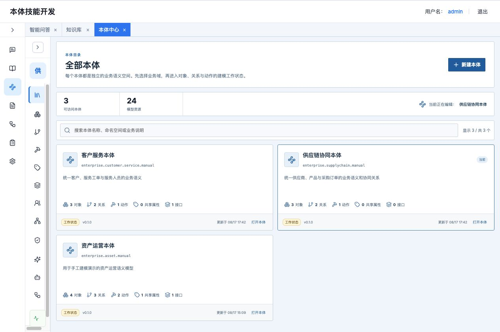
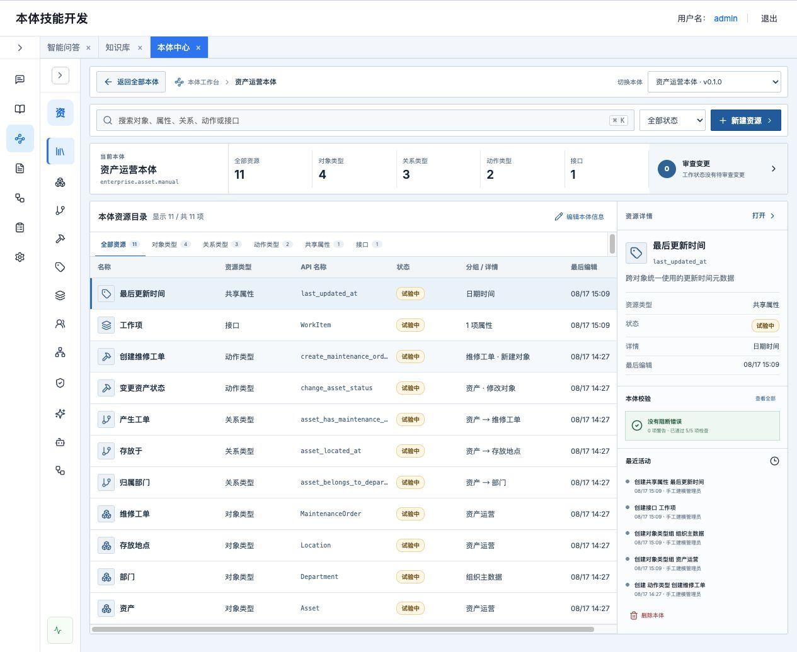
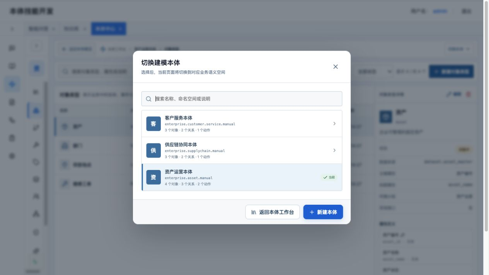
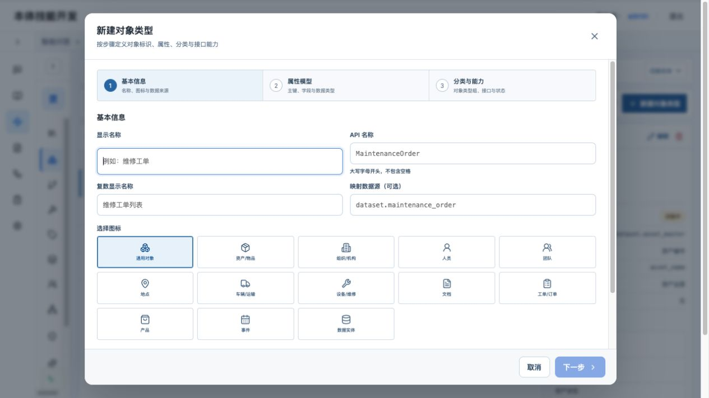
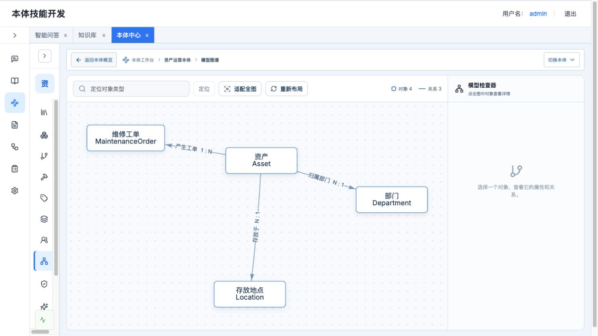
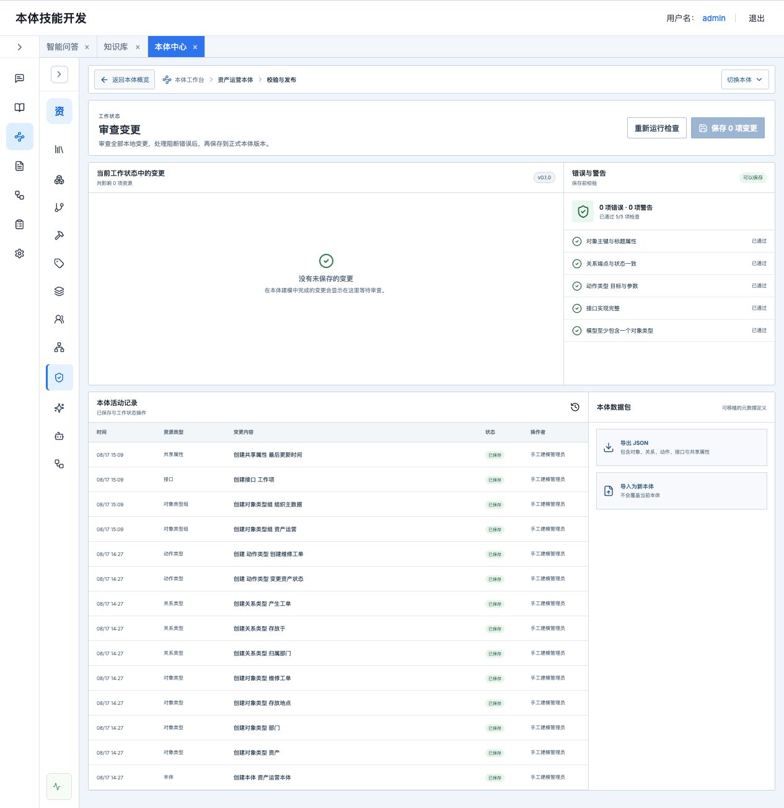

产品定义与成功标准
一期增强版不是“画一张概念图”，而是把 Schema、Mapping、Logic、Action、Security 与 Runtime 串成可治理闭环。文件和领域资料先成为 Evidence，模型只生成增量 Proposal，人工逐项决策后合并到工作状态，再经校验发布为正式版本。
1统一的本体工作台
14+企业语义资源类型
15模板工作表完整映射
1受控 Agent 运行时
完成定义
可以建
业务域、主题域、对象、属性、关系、接口、规则和动作均能完整增删改查。
可以管
支持多本体隔离、生命周期、工作状态、校验、审查、发布和活动记录。
可以运行
场景可组装对象、关系、数据映射、规则和受控动作，并生成可审计轨迹。
一期增强版范围与明确边界
一期必须 企业本体完整闭环
- 多本体目录与切换，业务域、主题域和对象直接归属
- 对象、属性、关系、独立接口、实例和模型图谱
- 数据源选择、对象/属性/关系映射与样例测试
- 确定性规则 / 函数、动作、系统能力与执行映射
- 可编排业务场景、人工确认、权限、评审、版本与审计
- XLSX、CSV、JSON、DOCX、Markdown、TXT、PDF 资料接入
- DeepSeek V4 Flash 增量建模建议，逐项决策后合并
- 本体智能体查询、关系穿透、规则轨迹和写操作确认演示
生产化阶段 原型不伪装的边界
- 真实生产数据的持续同步、回放和大规模对象索引
- 企业级 SSO、行列级授权策略下推与多租户隔离
- Action 对生产业务系统的真实写入、补偿与审批流
- 多人实时分支协作、复杂三方合并和语义冲突自动消解
- OCR、版面分析、向量检索与大规模异步文档解析集群
- 高可用元数据仓库、图计算集群和跨地域灾备
边界原则：智能能力可以生成候选资源，但只能写入独立 Proposal；任何模型建议都必须保留证据、置信度和理由，经过人工决策与校验后才能成为正式本体。模型密钥只从环境变量读取。
目标用户与关键场景
本体管理员
创建业务本体、维护命名空间、审查工作状态、处理质量问题并发布版本。
领域建模人员
将领域知识表达为业务域、主题域、对象、属性、关系、接口、规则和动作。
平台研发与审计人员
检查稳定标识、引用关系、变更记录和可移植数据包，为后续系统接入提供契约。
核心用户故事
US-01作为建模人员，我可以先从全部本体中选择业务域，再进入该本体的概览与资源建模，避免跨域误操作。
US-02作为领域专家，我可以不写代码地创建带主键、属性、关系和动作的业务模型。
US-03作为管理员，我可以在发布前看到全部修改、阻断错误和警告，并只在校验通过后生成新版本。
US-04作为平台研发，我可以导出完整模型 JSON，在另一环境导入为新本体，并保持内部引用正确。
信息架构与主流程
01 本体目录发现、搜索、新建业务语义空间
→02 本体概览查看资源、质量、变更和版本
→03 资源建模对象、关系、动作和复用契约
→04 模型检查图谱、引用、接口与完整性
→05 审查发布工作状态、校验、版本和审计
导航原则“全部本体”和“当前本体”不是平级菜单。两者统一收敛在“本体工作台”中：目录卡片穿透到详情，详情可以返回目录或直接切换本体。
上下文原则进入对象、关系、动作、图谱或治理页面后，页面顶部持续显示“本体名称 → 当前资源”，并提供返回本体概览与切换本体。



功能需求清单
| 编号 | 优先级 | 模块 | 需求说明 | 验收要点 |
|---|---|---|---|---|
| FR-01 | P0 | 本体工作台 | 目录与详情使用同一工作台层级；支持搜索、卡片穿透、返回和详情内切换。 | 切换后 URL、侧栏上下文、统计和资源目录同步。 |
| FR-02 | P0 | 本体 CRUD | 维护名称、唯一命名空间、业务说明、工作状态、版本和更新时间。 | 重复命名空间被拒绝；新建后直接进入详情。 |
| FR-03 | P0 | 对象类型 | 三步向导维护稳定标识、平台图标、主题域、已登记数据源、属性、主键、标题属性、接口和状态；不填写复数显示名。 | 必须且只能有一个主键；标题属性必须存在；未归入主题域时不能提交评审。 |
| FR-04 | P0 | 关系类型 | 定义起点、终点、方向、基数、业务说明、关系属性和生命周期。 | 端点必须属于当前本体；删除端点对象前检查引用。 |
| FR-05 | P0 | 动作类型 | 定义目标对象、新建/修改/删除规则、参数、提交条件、审批要求与对象影响。 | 通过能力与执行映射形成可执行契约；原型只做受控演示，不写生产系统。 |
| FR-06 | P0 | 业务域与主题域 | 分类主路径固定为“本体 → 业务域 → 主题域 → 对象类型”。 | 对象直接归属主题域；有下级引用时不得删除。 |
| FR-07 | P0 | 接口 | 定义可由多个对象类型实现的属性契约，并展示实现对象。 | 实现对象必须包含接口要求的同名同类型属性。 |
| FR-08 | P0 | 数据源与映射 | 登记数据源，以选择器绑定对象、属性和关系目标，并运行结构化样例测试。 | 来源和目标必须存在；被对象、映射或场景引用的数据源不能删除。 |
| FR-09 | P0 | 资源目录 | 支持统一搜索、状态筛选、类型筛选、检查器和资源快捷创建。 | ⌘/Ctrl + K 聚焦搜索；新建资源可直接进入对应表单。 |
| FR-10 | P0 | 模型图谱 | 展示对象节点、关系方向与基数，支持定位、适配全图、重排和对象检查。 | 切换本体和改变视口后全部节点仍在可视区域。 |
| FR-11 | P0 | 校验与发布 | 修改先进入工作状态；展示错误、警告、检查项和待审查变更，校验通过后发布版本。 | 阻断错误存在时不可发布；发布后版本递增、待审查队列清空。 |
| FR-12 | P0 | 导入导出 | 导出完整本体 JSON；导入时建立新的本体并重建内部引用。 | 不覆盖当前本体；非法数据不产生半成品。 |
| FR-13 | P1 | 审计 | 记录资源类型、操作、摘要、操作者、时间和是否仍在工作状态。 | 创建、编辑、删除和发布均可追溯。 |
| FR-14 | P1 | 响应式布局 | 两级侧栏可折叠，表格在局部滚动，主页面不被层层压缩或整体横向溢出。 | 694px 与 1280px 视口均可完成核心操作。 |
| FR-15 | P0 | 业务场景 | 以对象为入口，组装关系、数据映射、规则、动作、审批和结果验证步骤。 | 步骤顺序连续，引用完整，写动作必须人工确认，运行轨迹可审计。 |


核心元模型与业务规则
| 资源 | 最小定义 | 关键约束 | 生命周期 |
|---|---|---|---|
| 本体 | 名称、命名空间、说明 | 命名空间全局唯一；资源跨本体隔离 | 设计中 / 待评审 / 评审通过 / 已发布 |
| 业务域 / 主题域 | 编码、名称、责任人、上级域 | 对象直接归属主题域；存在引用时禁止删除 | 随本体工作状态与版本治理 |
| 对象类型 | 稳定标识、显示名、主键、属性、主题域 | 唯一主键；标题属性有效；接口完整实现；数据源已登记 | 已启用 / 试验中 / 已弃用 / 示例 |
| 关系类型 | 稳定标识、显示名、起终点、基数 | 端点必须属于当前本体；已启用关系要求端点状态一致 | 已启用 / 试验中 / 已弃用 / 示例 |
| 动作类型 | 目标对象、规则、参数 | 目标属于当前本体；写操作通过权限、确认与审计 | 已启用 / 试验中 / 已弃用 / 示例 |
| 接口 | 稳定标识、显示名、属性契约 | 实现对象必须满足同名同类型属性 | 已启用 / 试验中 / 已弃用 / 示例 |
| 业务场景 | 入口、触发、资源引用、执行步骤、输出、验收 | 引用可解析；步骤顺序连续；写动作需要人工确认 | 工作状态 / 已启用 / 已停用 |
删除与修改保护
稳定标识已建立的引用编码不能直接修改；需要改名时新建资源并迁移依赖。
引用保护被关系、动作、接口、数据映射或业务场景引用的资源不能直接删除，必须先解除引用。
状态降级对象降级为试验中、已弃用或示例时，关联关系同步降级，避免发布状态不一致。
交互与页面规范
上下文不丢失
所有资源页显示当前本体和当前位置；返回概览不经过目录；切换本体保持所在资源页。
创建路径明确
总览“新建资源”先选择类型，再直接打开相应创建表单；依赖不足时明确禁用。
表单逐步披露
对象类型使用三步向导；业务场景使用四段编辑并可自动生成执行步骤。
不手写 JSON
枚举、资源引用与映射目标使用选择器；可变键值结构使用表格编辑器。
危险操作可解释
删除前说明目标与影响；后端返回具体引用数量；已启用资源要求先弃用。
技术标识与业务名并列
中文名称服务业务理解，稳定标识服务系统集成，列表和检查器同时展示。
非功能需求
| 类别 | 一期要求 | 验证方式 |
|---|---|---|
| 隔离性 | 所有资源查询和写入必须带本体 ID；跨本体端点、目标和绑定被拒绝。 | API 自动化构造跨本体引用。 |
| 一致性 | 对象、关系、动作、接口、数据映射和场景约束由后端统一校验，不能只依赖前端。 | 绕过前端直接提交非法数据。 |
| 性能 | 原型规模下目录与资源页面 1 秒内可交互；图谱稳定布局不阻塞页面。 | 采购财务与管网两个内置本体、百级资源压力验证。 |
| 可移植性 | JSON 数据包包含模式版本、导出时间、元数据、模板扩展资源和实例。 | 导出后在空环境导入并对比统计。 |
| AI 安全 | 密钥只从环境变量读取；资料只形成 Proposal；模型失败时明确标记降级，不伪造成功。 | 代码扫描、模型请求 Mock、无密钥降级验证。 |
| 动作安全 | 写操作必须经过权限、确认和审计；原型不触达生产执行器。 | 智能体动作确认用例与轨迹检查。 |
| 兼容性 | 支持主流 Chromium 浏览器；桌面优先，两级导航可折叠。 | 1280px、1440px、1920px 三档回归。 |
| 可审计性 | 元数据变更、建模建议决策、合并与智能体工具调用均可追溯。 | 覆盖增删改查、AI 构建、发布与智能体场景。 |
一期验收标准
业务验收
- 采购财务与管网两套内置本体保持完整且受保护
- 15 张模板工作表均能在对应系统资源中找到
- 可完成证据 → DeepSeek → 建模建议 → 人工决策 → 合并 → 发布
- 可完成对象、关系、映射、规则、动作、接口与权限的手工维护
- 业务场景可生成和编辑执行步骤，写操作必须确认
- 图谱节点、边、方向和基数与关系定义一致
质量门槛
- 后端 API 自动化产品契约全部通过
- 未配置模型密钥时明确显示确定性降级，不伪装模型运行
- 前端生产构建无错误
- 关键页面无整体横向溢出和不可见画布
- 切换本体不出现侧栏裁剪、遮挡或状态错位
- P0 用例全部通过，P1 不存在阻断性缺陷

四周实施计划与依赖
任务按单人 2–8 小时可完成粒度拆分，整体预留约 25% 联调与缺陷缓冲。
M1 · 元模型与本体工作台（第 1 周）完成本体容器、业务域、主题域、多本体目录和上下文切换；完成标准：两套内置本体互相隔离。
M2 · 核心资源与数据映射（第 2 周）完成对象、属性、关系、独立接口、数据源、映射、实例与引用保护。
M3 · 场景、图谱与治理闭环（第 3 周）完成可编排场景、规则、动作、图谱、工作状态、评审、发布与审计。
M4 · 智能构建与验收（第 4 周）完成文件证据、增量建议、人工决策、响应式、测试与业务试用；完成标准：P0 全通过。
工作分解
| 任务 | 工作量 | 角色 | 依赖 | 完成标准 |
|---|---|---|---|---|
| 元模型与数据库表 | 8h | 后端 | 无 | 本体、业务域、主题域与核心资源可持久化 |
| 本体目录与上下文路由 | 6h | 前端 | 本体 API | 目录、详情、返回、页内切换一致 |
| 对象类型三步向导 | 8h | 前端+后端 | 属性元模型 | 主键、图标、主题域、数据源与接口可保存 |
| 数据源与映射 | 10h | 前端+后端 | 对象与关系 | 对象/属性/关系映射可配置、校验和测试 |
| 业务场景编排 | 10h | 前端+后端 | 映射、规则与动作 | 步骤可生成、编辑、排序、校验和运行 |
| 接口契约与引用保护 | 8h | 后端 | 对象类型 | 接口属性契约、数据源和映射引用受保护 |
| 图谱与检查器 | 6h | 前端 | 对象与关系 API | 全图可见、可定位、可重排 |
| 校验、评审、发布和审计 | 8h | 后端+前端 | 完整元模型 | 不可越级发布，版本递增，日志完整 |
| 导入导出 | 5h | 后端 | 完整元模型 | 重建 ID 映射且不覆盖原本体 |
| 自动化与业务验收 | 8h | 测试+产品 | 全部功能 | P0 全通过，问题闭环 |
风险、缓解与二期衔接
| 风险 | 影响 | 概率 | 缓解措施 |
|---|---|---|---|
| 把分类、接口、场景混为同一概念 | 高 | 中 | 业务域与主题域做分类；接口做结构契约；场景做横向业务闭环。 |
| 跨本体误引用 | 高 | 中 | 所有绑定由后端校验 ontology_id，不依赖下拉框过滤。 |
| 模板字段质量不一致 | 高 | 高 | 保留原编码作追溯，以语义名称修复对象绑定，问题写入版本记录。 |
| 模型建议污染正式模型 | 高 | 中 | 统一走证据 → 建模建议 → 人工决策 → 合并 → 发布，模型没有直写正式版本的接口。 |
| 动作越权或误执行 | 高 | 中 | 权限策略、确认、执行映射和审计四层控制；原型不触达生产执行器。 |
| SQLite 在多人高并发下受限 | 中 | 低 | 用于高保真原型和契约定型；生产迁移到版本化元数据与对象索引服务。 |
一期增强版已打通的闭环
证据集文件、模板与领域证据
→本体建模提案候选对象、关系和动作
→差异与评审接受、驳回、证据与置信度
→已发布本体人工确认后的正式版本
→智能体运行时查询、规则和受控动作
生产化方向：保持当前元模型、稳定标识、建模提案状态机和 动作安全边界不变，替换存储、解析、授权和执行基础设施，而不是重新设计一套不兼容的产品。